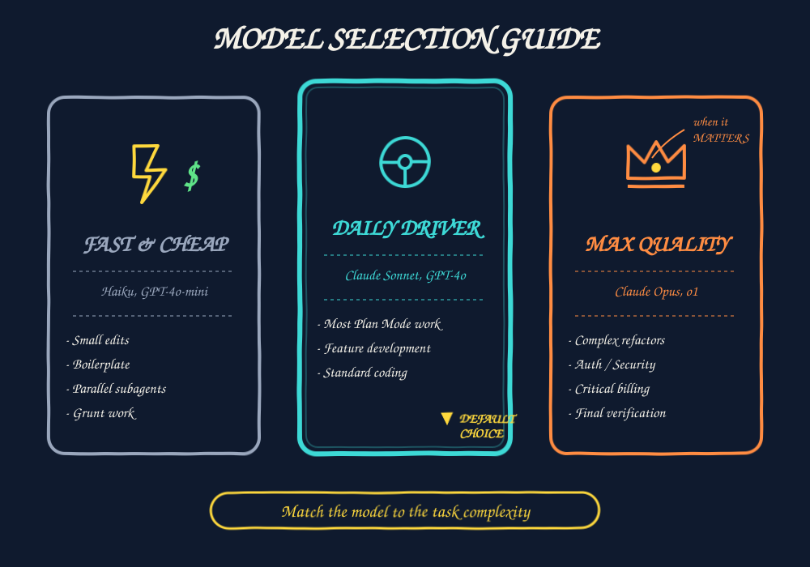

01 What is Cursor? The AI-native IDE in 60 seconds. ▾

Why it matters
If you've used VS Code, you already know 90% of Cursor. The file tree, command palette, terminal, debug console — identical. The 10% that's different is the part that changes how you ship code: Cursor indexes your repo into a vector database so any prompt can reference any file, and the AI uses real tools (read, edit, search, shell) rather than just spitting text.
What makes it different from Copilot
- Repo-wide context. Copilot reads what's on screen. Cursor reads what's on disk, indexed and queryable.
- Model choice. Swap Claude / GPT / Gemini / Grok per message. Different tasks deserve different models.
- Real tool use. Cursor can run
npm test, open files, search, edit — not just suggest text. - Privacy Mode. One toggle in settings = code never leaves your machine for training.
Install & pricing
- Download from
cursor.com. - Sign in with GitHub or Google.
- On first run, click "Import VS Code settings" — extensions, keybindings, themes carry over in ~30 seconds.
- Open any repo. Press Tab on a half-written line. You're done.
Free (Hobby)
2,000 completions / month.
50 slow premium requests.
Great for trying it out.
Pro — $20/mo
Unlimited completions.
500 fast premium requests.
The everyday-coder tier.
02 The 4 ways to talk to Cursor Tab → Cmd-K → Chat → Agent. Use the smallest tool that works. ▾

1. Tab — multi-line, multi-file autocomplete
The single feature you'll use the most. Press Tab and Cursor predicts your next edit, often multiple lines at a time. The detail tutorials skip: it doesn't just complete at the cursor — it suggests cursor jumps. You start typing in UserService.ts, Tab proposes a matching change in UserService.test.ts. This alone is worth the subscription.
Best for: "the next obvious edit."
2. Ctrl+K / ⌘K — inline edit
Select some code, hit Ctrl+K, describe the change in plain English. Get a diff in place. Accept with Tab, reject with Esc.
// Select these lines, press Ctrl+K, then type:
// "convert to async/await, add error handling"
function fetchUser(id) {
return fetch('/api/users/' + id)
.then(r => r.json())
.catch(e => console.error(e));
}Best for: renames, refactors, format conversions, "rewrite this block" tasks.
3. Ctrl+L / ⌘L — Chat
Opens a sidebar conversation. You can ask questions, get explanations, and optionally apply suggested edits. Chat is read-mostly: it can edit if you tell it to, but its default vibe is "let's think about this together."
Best for: understanding code, debugging hypotheses, "how do I…?" questions.
4. Ctrl+I / ⌘I — Agent
The autonomous one. You give a goal, the agent reads files, edits them, runs tests, loops until done. Multi-file, multi-step. Don't open this for trivial changes — it's overkill.
Best for: "build the feature," "fix this failing test," "migrate this module."
The decision rule
Right tool, right job
Line of code → Tab
Refactor a block → Ctrl+K
Ask a question → Ctrl+L
Build a feature → Ctrl+I
Wasteful patterns
Agent for "rename a variable"
Chat for "build a whole API"
Cmd-K for "explain this code"
Ignoring Tab entirely
.then(...) chain, Ctrl+K, type "async/await", accept. Now you've used two modes in 60 seconds.
03
The @ symbol — feeding context
Every prompt should start with an @-reference. Here's why.
▾
@-reference it guesses from open files. With one, it knows exactly what you mean. Make @ a habit.
The 8 reference types you should know
@file— a single file by path. "Look at@src/auth/login.ts."@folder— a whole directory. "Audit@src/auth/for missing input validation."@code— a specific function, class, or symbol.@docs— indexed library documentation (React, Next.js, Stripe, …). No more pasting docs into chat.@web— live web search. Great for fresh API changes the model doesn't know.@git— reference a diff or commit. Killer for code review.@codebase— RAG search across your entire repo. This makes "find every place we call the old payments API" actually work.@past-chat— reference an earlier conversation. No more re-explaining yourself.
A good prompt vs a bad prompt
Bad — no context
Make the login function
support 2FA.Cursor guesses which file. Often picks the wrong one. Often misses team conventions.
Good — loaded with @
Add 2FA to @auth/login.ts.
Use @docs (next-auth) for
TOTP. Match patterns in
@auth/session.ts. Add tests
to @auth/login.test.ts.Cursor reads exactly the right files, learns your conventions, knows the library, writes tests.
How @codebase actually works
Cursor splits your repo into chunks (functions, classes, doc sections), embeds them with a small model, and stores the vectors locally. When you use @codebase, Cursor retrieves the top-k most relevant chunks and stuffs them into the prompt. This is why it can answer "where do we set the cookie domain?" in a 500-file project without you having to know.
@docs(stripe) @file(checkout.ts) @file(checkout.test.ts) gives the agent the library, the source, and the tests all at once.@. Quality goes up immediately.04 Agent mode in depth The autonomous loop: think → act → observe. ▾

The four tools
- Read — opens any file and quotes back exact lines. Working from real code, not memory.
- Edit — produces a structured diff. Accept or reject per chunk, not per file.
- Search — regex (ripgrep) and glob across the whole repo.
- Shell — runs
npm test, git commands, installs, anything.
Two safety nets
Diffs first. Every edit is shown before it's applied. You can accept the whole diff, accept some chunks, edit a chunk inline, or reject everything.
Checkpoints. Every agent run creates a checkpoint. Went sideways? Click the checkpoint to rewind your files to before the run started. You can't break things permanently in agent mode.
The auto-run toggle
In settings there's an "Auto-run safe commands" toggle. Enable it and Cursor will run whitelisted commands (npm test, ls, git status, etc.) without pausing for confirmation. Turn it on once you trust the model — the loop becomes dramatically faster.
Anatomy of a great agent prompt
Three ingredients: context, spec, verification.
[CONTEXT] Add to @components/Header.tsx, reuse styling from @components/Button.tsx.
[SPEC] A dark-mode toggle.
- Persists choice in localStorage under 'theme'.
- Respects prefers-color-scheme on first visit.
- Shows a sun icon in light mode, moon in dark.
[VERIFY] Add a test in Header.test.tsx that toggling
updates document.documentElement.dataset.theme.- Asking the agent to do too much in one prompt (3 features at once).
- Skipping the verification step — you get code, no tests, no proof it works.
- Not reading the diffs because they're long. Read them anyway. Even a fast skim catches the wrong-file bug.
05 Plan mode — design before code Agent mode with one hand tied behind its back — and that's the point. ▾

The three chat modes
The dropdown at the top of the chat panel offers:
- Ask — pure read-only conversation. No tools.
- Plan — can read files + use search, but cannot edit. Produces a plan you approve.
- Agent — full edit permission, runs the loop.
The Plan workflow
- You describe what you want (with @-references!).
- Agent reads relevant files, asks clarifying questions if needed.
- It produces a written plan: files to touch, functions to add, tests to write, trade-offs.
- You review. Edit the plan inline if you want.
- Click "Run plan". Cursor switches itself to Agent mode and executes the approved plan.
When to use Plan mode
Always Plan first
Change touches > 2 files
Auth / payments / migrations
You'd ask ≥ 3 clarifying questions
Risky refactor
Unfamiliar part of the codebase
Skip the plan
Single-file change
Adding a unit test you've described
Renaming a variable
Anything you'd Cmd-K instead
[Plan mode prompt]
Plan an OAuth login with Google for our Next.js app.
- Use NextAuth (see @docs).
- Keep guest checkout working (currently in @auth/guest.ts).
- Persist user role from existing @models/User.ts.
- Add e2e tests with Playwright.
Do NOT write code yet. Give me a step-by-step plan
with files, functions, and risks.
06
Rules & AGENTS.md
Persistent project memory. Stop repeating yourself in every prompt.
▾
.cursor/rules/ and Cursor reads them on every agent run. Encode your conventions once, never repeat them.
Three layers of persistent context
.cursor/rules/*.mdc— Cursor-specific, scoped per-file via glob frontmatter.AGENTS.mdat the repo root — portable, cross-tool standard (works in Cursor, Claude Code, others).SKILL.md— reusable multi-step playbooks the agent picks up automatically.
Example: a TypeScript rule
---
description: TypeScript & React conventions for this repo.
globs:
- "**/*.ts"
- "**/*.tsx"
---
# TypeScript rules
- Use `pnpm`, never `npm` or `yarn`.
- Co-locate tests: `Button.tsx` → `Button.test.tsx`.
- Public APIs need JSDoc with `@example`.
- Prefer `type` over `interface` unless you need declaration merging.
- Never use `any`. Use `unknown` and narrow.
- Server actions go in `app/actions/`. Add `"use server"` directive.
# Security
- Never log secrets. Use the `redact()` util.
- Never commit `.env`. The repo has `.env.example` instead.Example: AGENTS.md at the repo root
# AGENTS.md
## Project
Storefront monorepo. Web (Next.js 15) + Mobile (React Native).
Stack: TypeScript, Tailwind, Prisma, Postgres, Stripe.
## Workflows
- Run tests: `pnpm test`
- Run dev: `pnpm dev`
- DB migrate: `pnpm db:migrate`
## Conventions
- All env vars go through `lib/env.ts` (zod-validated).
- Errors use the `AppError` class in `lib/errors.ts`.
- Date math uses `date-fns`, not native Date arithmetic.
## Out of scope for the agent
- Don't touch `legacy/` — we're sunsetting it.
- Don't add new dependencies without asking.SKILL.md — reusable workflows
Where rules describe conventions, skills describe processes. A SKILL.md might describe "how to add a new API endpoint": create the route file, add a zod schema, write integration tests, update the OpenAPI doc. Drop it in .cursor/skills/add-endpoint/SKILL.md — the agent picks it up when your prompt matches.
.cursor/rules/style.mdc with 5 conventions from your codebase. Restart Cursor. Ask the agent to add a new component — it'll match your style without you mentioning it.07 MCP, Hooks & Background Agents Extend Cursor beyond code. Connect to Jira, Postgres, Slack, your CI. ▾

MCP — Model Context Protocol
An open spec (originally from Anthropic) for exposing tools to AI agents. Every MCP server adds new abilities to the agent. Popular ones:
- Jira / Linear — read & update tickets.
- Postgres / MySQL — query your dev DB safely.
- GitHub / GitLab — full PR + issue management.
- Slack — post messages, read threads.
- Filesystem / Notion / Confluence / Stripe — the list grows daily.
Configure them in .cursor/mcp.json:
{
"mcpServers": {
"postgres": {
"command": "npx",
"args": ["-y", "@modelcontextprotocol/server-postgres",
"postgres://localhost/myapp"]
},
"github": {
"command": "npx",
"args": ["-y", "@modelcontextprotocol/server-github"],
"env": { "GITHUB_TOKEN": "${GITHUB_TOKEN}" }
}
}
}Hooks — run scripts on agent events
A hooks.json in .cursor/ lets you fire shell scripts when agent events occur: after an edit, before a tool runs, when a session starts, etc.
{
"hooks": {
"afterEdit": "pnpm prettier --write \"$CURSOR_FILE\"",
"afterAccept": "pnpm test --related \"$CURSOR_FILE\"",
"beforeShell": "./scripts/audit-log.sh"
}
}Common use cases: auto-format, auto-test, audit-log every accepted change, block destructive commands.
Background Agents — the showstopper
Run a Cursor agent in the cloud, on its own branch, in a fresh sandbox. You give it a goal, walk away, come back to a PR.
- Perfect for slow refactors, dependency upgrades, multi-repo rollouts.
- Each run is isolated — no risk to your local work.
- Powered by Claude / GPT under the hood, same models you use locally.
- Trigger from the cloud dashboard or via the Cursor SDK from CI.
The power combo
- MCP-Jira: agent picks up tickets labeled
cursor-ready. - Background Agent: implements the ticket on a feature branch.
- Hook: when the PR is opened, posts the link back to the Jira ticket.
- Connecting an MCP server with too-broad permissions (read/write Postgres in production — don't).
- Running Background Agents on huge tasks without breaking them up — you get one giant PR no one can review.
- Hooks that block on long operations (use async / background scripts).
08 TDD with agents Tests are the specification. The single biggest quality multiplier. ▾

Why TDD changes the game with AI
Without tests, the agent's output is "trust me." With tests, the agent's output is "trust the tests." That is a much better deal — and it forces you to articulate behaviour before code, which is the hard part anyway.
The three-prompt recipe
// PROMPT 1 - RED
Write failing tests for slugify(input: string): string.
Cover:
- "Hello World" -> "hello-world"
- " trimmed " -> "trimmed"
- "Café Crème" -> "cafe-creme" (strip accents)
- "100% PURE!" -> "100-pure" (strip punct)
- "" -> throws RangeError
- maxLength=20, long input -> truncated & clean
Use Vitest. Place in src/utils/slug.test.ts.
Do NOT implement the function. Tests should be red.
// PROMPT 2 - GREEN
Now implement slugify in src/utils/slug.ts.
Minimum code to make all tests pass.
Use Intl.Normalize for accents.
// PROMPT 3 - REFACTOR
Refactor slugify for readability.
Extract any helper functions.
Tests must stay green.Three rules that make TDD with AI work
- Tests first, no exceptions. The moment you let the agent write production code before the test, it'll write a test that conveniently passes its buggy implementation.
- One prompt per stage. Don't ask for red + green + refactor in one message. Each stage has different objectives.
- Read the test names. If the agent named a test
"works correctly", reject and ask for a behavioural name. Test names are documentation.
09 Model selection Match the model to the task. Three tiers, three jobs. ▾

The three tiers
Fast & Cheap
Models: Haiku, GPT-4o-mini, cursor-small
Cost: ~1x baseline
Use for: small edits, boilerplate, parallel subagents, anything where you'd run it 20 times.
Daily Driver
Models: Claude Sonnet, GPT-4o, Gemini 2.5 Pro
Cost: ~5x baseline
Use for: feature dev, Plan mode, standard refactors. ~80% of your sessions live here.
Max Quality — when it matters
Models: Claude Opus, o1 / o3, GPT-5 Pro
Cost: ~25x baseline
Use for: complex refactors, auth/payments/security code, hard debugging, final pre-merge verification. Slow and pricy — don't run them for every prompt, but don't use Haiku for your billing service either.
Auto mode — let Cursor pick
There's an "Auto" model option that lets Cursor route each message based on complexity. Convenient, but you give up control. I usually pick manually — it's two clicks and you learn the trade-offs.
10 The cheat sheet Everything on one page. Screenshot it. ▾

Shortcuts you'll use daily
The @ reference quick-list
@file@folder@code@codebase@docs@web@git@past-chatWhich mode? — the decision tree
- One line / next obvious edit? → Tab
- Refactor a single block? → Ctrl+K
- Just a question / explanation? → Ctrl+L (Chat)
- Build a feature, multi-file? →
- Big or unclear? → Plan mode first.
- Small & clear? → Ctrl+I (Agent) directly.
Model picks
- Grunt work / parallel subagents → Haiku, GPT-4o-mini.
- Daily driver → Claude Sonnet, GPT-4o.
- When stakes are high → Claude Opus, o-series.
- Tests first. They're the spec.
- Plan before big changes. 10 minutes saves an hour.
- Match the model to the stakes.